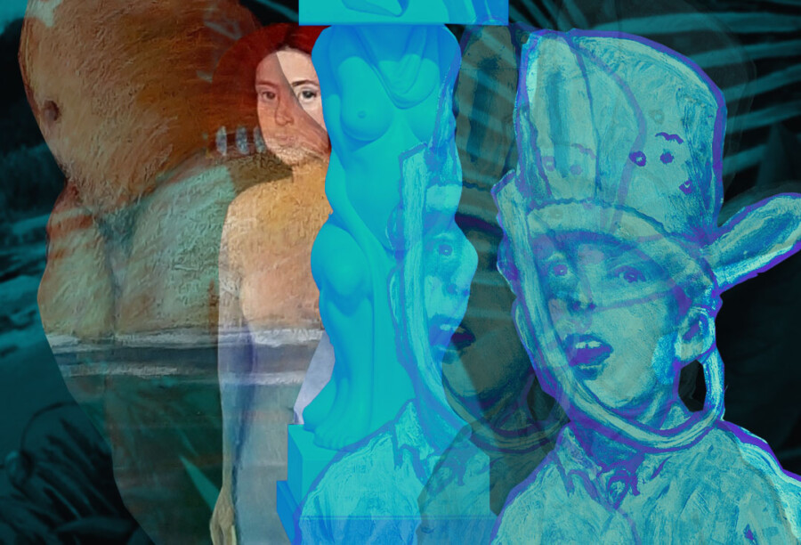

WITHOUT PERMISSION
Chicago Grand Gallery presents Without Permission, a group exhibition featuring works by Paul Sierra, Kevin C. Lawler, and David Hauptschein. The exhibition brings together three distinct practices that challenge fixed narratives through painting, material exploration, and AI-driven image-making.
Across different mediums, the artists engage with identity, transformation, and authorship—each approaching the act of creation as something fluid, unstable, and continuously redefined.
Paul Sierra explores identity shaped through migration and memory. His paintings move between abstraction and figuration, where forms dissolve and re-emerge, reflecting a constant state of transition. Color and gesture become a language for navigating the space between past and present.
Kevin C. Lawler approaches painting through material and surface. With a background in traditional gilding and conservation, his work carries a strong sense of craft while remaining visually immediate. His compositions often hold tension between control and spontaneity, where texture and surface act as a record of time.
David Hauptschein presents AI-based digital works that blur the boundaries between authorship and generation. Using artificial intelligence as both tool and collaborator, his images construct complex, often unsettling narratives. His practice questions the role of the artist in an era where images can be produced, manipulated, and reinterpreted beyond direct human control.
Without Permission positions these practices in dialogue, where painting, process, and machine-generated imagery intersect. The exhibition resists singular interpretation, instead embracing contradiction, fragmentation, and the instability of meaning.